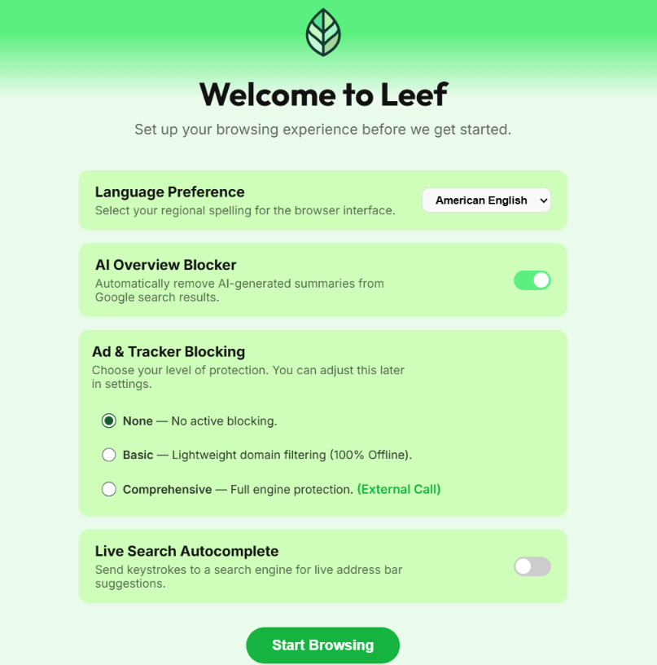
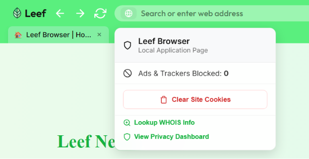
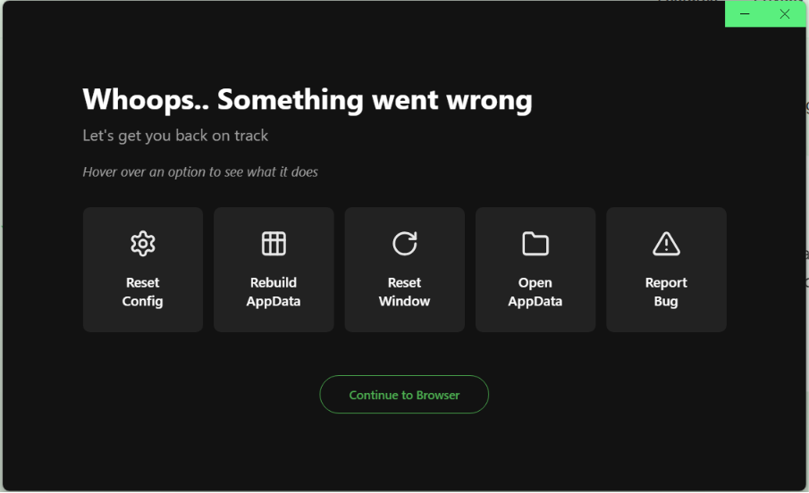

Interactive Troubleshooter
Before diving into the manual guides, use this wizard to diagnose the most common issues based on your symptoms.
Suggested Solution: Dial it back
Comprehensive blocking can sometimes be too aggressive and break site layouts. Try switching to Basic blocking or disabling it entirely for that specific site via the Globe Icon menu.
Suggested Solution: Check Recovery Mode
If the site is broken even with basic blocking, an internal component might be stuck. Try launching in Recovery Mode and selecting Reset Window or Reset Config.
Suggested Solution: Disable Ad-blocking for YouTube
YouTube has recently started aggressively blocking ad-blockers. To watch videos, you may need to disable Leef's ad-blocker for YouTube via the Globe Icon menu. We are working on a more permanent fix!
Suggested Solution: Disable "Warp Speed" Lab
You likely enabled YouTube Warp Speed in leef://labs. This skips unskippable ads by playing them at 16x speed, but it can sometimes get stuck on the main video. Try toggling it off.
Suggested Solution: Disable Background Limit
In Settings > Privacy & Security, make sure "Background Limit" is toggled OFF. When enabled, Leef pauses all background audio and video to save resources.
Suggested Solution: Check Efficiency Mode
Efficiency Mode throttles background tabs to 30% CPU. If your audio stream is high quality, this can cause stuttering. Try disabling Efficiency Mode in Settings > Performance.
Suggested Solution: Enable Efficiency Mode
If you have many tabs, Efficiency Mode is your best friend. It throttles background tabs to save RAM and CPU. Enable it in Settings > Performance.
Suggested Solution: Rebuild AppData
If the browser is slow with only a few tabs, there might be corrupted data. Try the Rebuild AppData option in Recovery Mode (hold Shift at launch).
Suggested Solution: Redo Setup from Settings
You can re-trigger the Setup Wizard from inside the browser. Go to Settings > Advanced and look for the "Redo Setup" option. If you don't see it, try a full reset via Reset AppData.
Installation
Leef is currently available for Windows. macOS and Linux builds are in development and will be available soon.
Windows Installation
1. Grab the latest .exe from our GitHub Releases page.
2. Run the installer. You may see a "Windows Protected your PC" popup — this is because we haven't purchased a code-signing certificate yet. Click More Info and then Run Anyway.
3. Leef installs and launches automatically. No bundled extras, just the browser.
On restricted networks, you may need to run the installer as an administrator.
Setup Wizard
On first launch, Leef walks you through a quick setup. No account creation, no newsletter signup.
First-Time Configuration
Choose your default search engine, toggle the Leef News feed, and pick a theme. The setup takes seconds.

Note: Interface shown is from v0.4.0 and is subject to change during development.Ad-blocking
Leef includes a built-in ad-blocker with tiered protection levels, giving you control over how much gets through.
Blocking Tiers
- None: No active blocking.
- Basic: Lightweight domain filtering, processed entirely offline.
- Comprehensive: Full engine protection using external filter lists. Blocks trackers, ads, and known malware domains.
GPC Signal
Leef sends the Global Privacy Control (GPC) signal with every request, automatically telling websites that you do not want your data sold or shared.
How it works
Every request Leef makes includes the GPC header. Under regulations like the CCPA, websites are legally required to honor this signal. Think of it as "Do Not Track" with actual legal teeth.
Site Identity
Transparency is key. Clicking the Globe Icon in the address bar gives you an instant breakdown of the site you're visiting.
The Globe Menu
The Globe Icon provides a clear summary of the current site:
- Ad-block stats: Real-time count of blocked trackers.
- WHOIS Lookup: See who owns the domain without leaving the browser.
- Security Details: Certificate info and connection strength.

Note: Interface shown is from v0.4.0 and is subject to change during development.Leef Hub
The Hub is your new tab page — a clean workspace for the sites you actually use.
Managing Tiles
Add, edit, and pin your favorite sites. Hover over a tile to see edit and delete options. No sponsored content, ever.
Themes & Tabs
Leef supports multiple themes and layout options to fit your workflow.
Tab Management
Leef offers a vertical tab sidebar for managing large numbers of open tabs. Group tabs by project to stay organized.
Efficiency Mode
Efficiency Mode helps Leef stay fast by managing system resources automatically.
Leef Limiter
When enabled, Efficiency Mode hibernates background tabs after a period of inactivity and limits CPU usage. Great for keeping things snappy when you've got a dozen tabs open.
AI-Free Search
Leef stops Google AI Overviews from generating entirely, keeping search results clean and link-first.
Slop Filtering
Leef automatically filters out AI-generated summary boxes from search results, saving bandwidth and giving you direct access to the links you searched for.
Leef News
Stay informed without being tracked. Leef News is a private, locally-fetched RSS feed from Yahoo.
Private Headlines
Headlines are fetched directly on your machine. Leef doesn't track what you read or build a profile from your clicks. Dismiss any headline with the "I don't care" button.
Leef Labs
Experimental tools that can be toggled in leef://labs. These are works in progress and may not be stable.
Slop Scanner
Analyzes page content for common markers of AI-generated text using heuristic detection. It's not perfect — nothing is — but it's a useful gut-check.
Paywall Fog
Rotates local identity markers (cookies, localStorage) to help bypass metered paywalls without disrupting authenticated sessions.
Recovery Mode
If Leef is crashing or behaving unexpectedly, Recovery Mode provides a safe way to diagnose and fix the issue.
How to trigger
Hold the Shift key while launching Leef. A specialized menu will appear allowing you to reset your configuration or clear app data without losing your bookmarks.

Note: Interface shown is from v0.4.0 and is subject to change during development.Leef does not support external extensions at this time. We are currently exploring ways to implement extension support while maintaining our strict privacy standards.
Resetting AppData
If Recovery Mode doesn't resolve the issue, you can perform a full reset of Leef's data.
Manual Reset
On Windows, navigate to: %APPDATA%/Leef and delete the folder. This will remove all your settings, history, and bookmarks, so make sure you've saved anything you need first.
Bug Reporting
Found a bug? We want to hear about it. Depending on the nature of the issue, you can report it through our public or private channels.
Public Issues (GitHub)
For general bugs, feature requests, or UI issues, please use our GitHub repository. This allows other users to see if their issue is already being addressed.
Open GitHub IssuesSerious or Private Issues
If you've found a security vulnerability or a serious bug that requires privacy, please use our private reporting form. This goes directly to the core team.
Private Bug Report